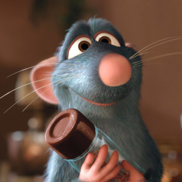
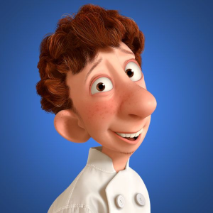

Empadas Deliciosas começou como um pequeno negocio familiar em 2024, focado em trazer as melhores empadas para nossos clientes. Utilizamos ingredientes frescos e receitas tradicionais passadas de geração em geração.
Nosso Time !

Willian SousaFundador

Leonardo AlvesChef de Cozinha
Nossa história!
Desde nossa inauguração, conquistamos uma base de clientes fiéis e expandimos nossas operações para várias localidades. Continuamos a inovar e a aperfeiçoar nossas receitas para oferecer sempre o melhor.
Nossos Valores !
* Qualidade: Utilizamos apenas ingredientes frescos e selecionados direto da BIO-Farm
* Tradição> Respeitamos as receitas tradicionais e os métodos de preparo.
* Satisfação do Cliente: Nosso Objetivo é proporcionar uma experiência gastronômica inesquecível.
* Inovação> Estamos sempre em busca de novas receitas e sabores.